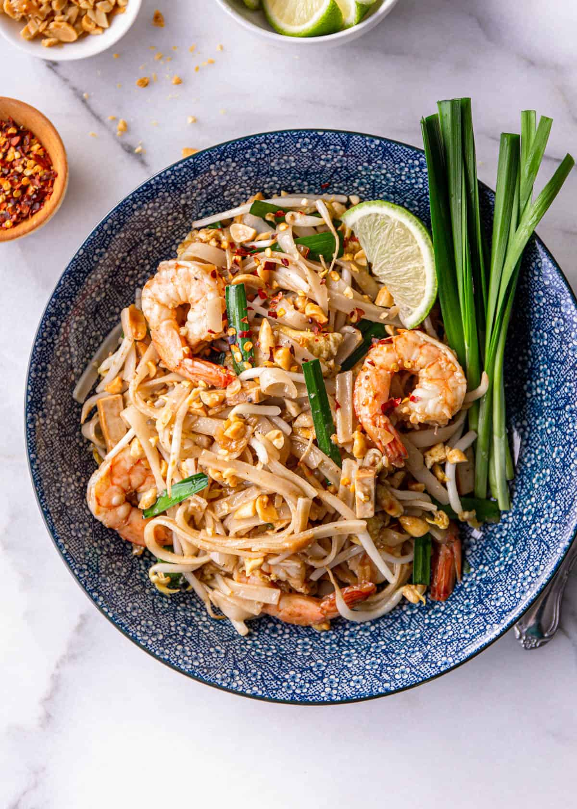

Pad Thai Recipe

Description
Pad Thai is a famous Thai stir-fried noodle dish that blends savory, tangy, and slightly sweet flavors. Made with rice noodles, eggs, tofu, shrimp or chicken, and a tangy tamarind sauce, it's topped with peanuts, lime, and fresh herbs for a perfect balance of taste and texture.
This street food favorite is both comforting and refreshing, offering the ideal mix of protein, vegetables, and chewy noodles for a satisfying meal.
Ingredients
Pad Thai:
- 200g rice noodles
- 200g shrimp, chicken, or tofu (your choice)
- 2 eggs
- 1 tablespoon vegetable oil
- 3-4 cloves garlic, minced
- 1 small shallot, finely chopped
- 1 cup bean sprouts
- 2-3 spring onions, chopped
- 1/4 cup roasted peanuts, crushed
- 1 lime, cut into wedges
- Fresh cilantro (optional, for garnish)
Pad Thai Sauce:
- 2 tablespoons tamarind paste
- 2 tablespoons fish sauce
- 1 tablespoon soy sauce
- 1 tablespoon sugar
- 1 tablespoon lime juice
- 1/2 teaspoon chili flakes (adjust for spice preference)
Steps
- Prepare the Noodles:
- Soak the rice noodles in warm water for about 30 minutes until they’re soft but not fully cooked. Drain and set aside.
- Make the Sauce:
- In a small bowl, mix tamarind paste, fish sauce, soy sauce, sugar, lime juice, and chili flakes. Adjust sweetness or tanginess to taste.
- Cook the Protein:
- Heat oil in a wok or large skillet over medium heat. Add shrimp, chicken, or tofu and cook until done. Remove from the pan and set aside.
- Sauté Aromatics:
- In the same pan, add a little more oil if needed. Sauté the minced garlic and shallots until fragrant.
- Cook the Eggs:
- Push the garlic and shallots to one side of the pan and crack the eggs into the empty side. Scramble the eggs until cooked, then mix them with the garlic and shallots.
- Stir-Fry the Noodles:
- Add the soaked rice noodles to the pan, pouring the Pad Thai sauce over them. Stir everything together to coat the noodles evenly with the sauce.
- Add the Protein and Vegetables:
- Toss in the cooked shrimp, chicken, or tofu along with bean sprouts and spring onions. Stir-fry for another minute to combine everything well.
- Serve:
- Plate the Pad Thai and garnish with crushed peanuts, fresh cilantro, and lime wedges. Serve immediately with extra lime and chili flakes on the side.
Enjoy your homemade Pad Thai with its perfect balance of savory, tangy, and nutty flavors!